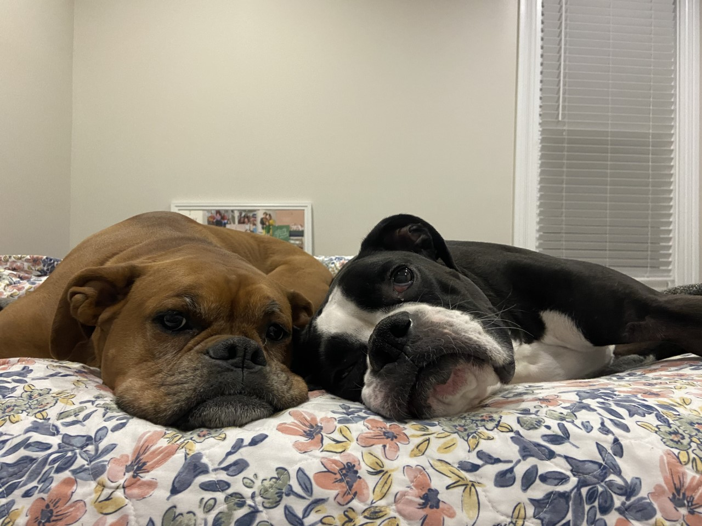

Maddie Foster
Maddie Foster My full name is Madeline Hawley Foster, but I go by Maddie with my friends and family. I grew up in Richmond, Virginia with my mother and my brother. My brother is one year older than me and we grew up doing most of our activities together, including theater. We performed with the theater company, Characterworks Theater , for ten years before going to college.
Above is a video about the theater company I was very involved in and their mission. In my time in the group, I performed in shows such as The Little Mermaid, Oliver, Now in college, I no longer perform and sing but still love theater.
My family and I have two dogs, named Lola and Piper, and one cat named Zuzu.

This is a picture of my two dogs, Lola and Piper. They are 6 and 4 and share the same birthday, just two years apart.
(804) 938-0631 mfoster29@elon.edu